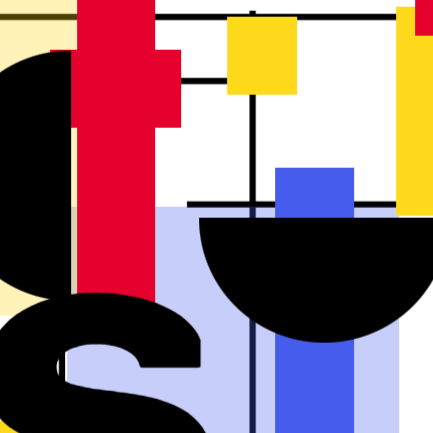
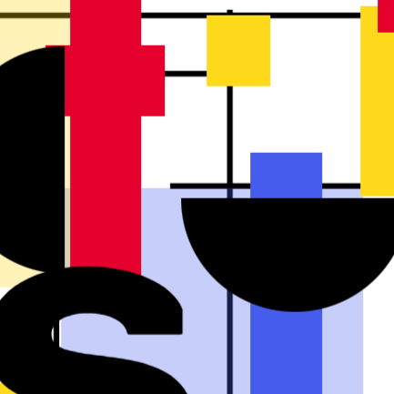

use the mouse
Dans les océans, au moment où la nuit tombe, il est parfois possible d'observer de magnifiques phénomènes
de bioluminescence. Ce sont des micro-organismes marins qui, lorsqu'on les remues, sont s'illuminer.
D'ailleurs, Jules Verne évoque ce phytoplancton qui erre parmi les vagues dans son livre « Vingt-Mille Lieus
sous les mers ». Cette animation est inspirée de ce phénomène naturel.
Promenez le curseur dans la fenêtre pour illuminer ce minuscule océan...


 
